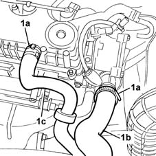
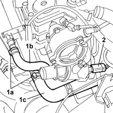
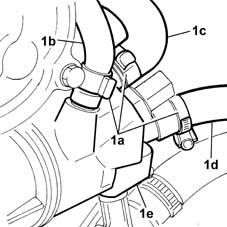
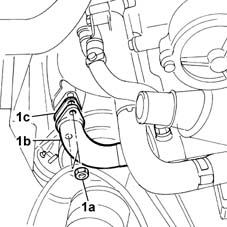
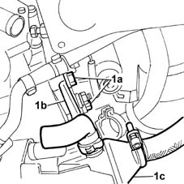
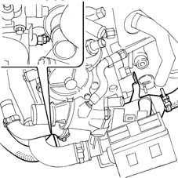
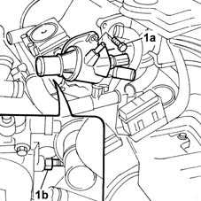
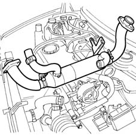

1080C80 exhaust gas water heat exchanger for egr valve r r
- Path
- Procedures > 10 ENGINE UNIT > 1080 EXHAUST EMISSION CONTROL SYSTEM > 1080C exhaust gas recirculation system (e.g.r.) > 1080C80 exhaust gas water heat exchanger for egr valve r r
- Kind
- repair procedure (removal / refitting; the operation number is the code)
- Applies to
- engines: 1.9 JTD 8V; all production periods
- Interactive page
- https://sloeber94.github.io/elrnDB-fMltpl/en/#/2891436
Applies to: engines: 1.9 JTD 8V; all production periods; only with equipment: Euro 3
 Removing
Removing
 Refitting
RefittingOpen the bonnet lid.
Disconnect the battery negative (-) terminal.
1064A28 SOLENOID VALVE FOR TURBOCHARGER VANE ACTUATOR - R.R.
1. Open the bands (1a) and disconnect the pipe (1b) between the radiator and the thermostat cup and the oil vapour recovery pipe (1c).

Applies to: engines: 1.9 JTD 8V; all production periods; only with equipment: Euro 3
1. Open the bands (1a) and disconnect the pipe (1b) from the coolant manifold to the heat exchanger and the pipe (1c) from the cup to the recirculation manifold.
2. Disconnect the electrical connector for the thermostat cup.
 | Name | Connector |
|---|---|---|
2 | Engine coolant temperature sensor |

Applies to: engines: 1.9 JTD 8V; all production periods; only with equipment: Euro 3
1. Open the bands (1a) and disconnect the coolant inlet and outlet pipes (1b), (1c) and (1d) from the cup (1e).

Applies to: engines: 1.9 JTD 8V; all production periods; only with equipment: Euro 3
1. Undo the two nuts (1a) fixing the connector (1b) between the heat exchanger and the exhaust manifold and disconnect the connector keeping the gasket (1c) underneath.

Applies to: engines: 1.9 JTD 8V; all production periods; only with equipment: Euro 3
1. Undo the two rear bolts (1a) fixing the bracket (1b) securing the heat exchanger (1c) to the cylinder head.

Applies to: engines: 1.9 JTD 8V; all production periods; only with equipment: Euro 3
1. Undo the front nut (1a) fixing the heat exchanger to the thermostat cup and move the heat exchanger (1b) aside.

Applies to: engines: 1.9 JTD 8V; all production periods; only with equipment: Euro 3
1. Undo the upper bolt (1a) and the lower nut (1b) fixing the thermostat cup and remove it.

Applies to: engines: 1.9 JTD 8V; all production periods; only with equipment: Euro 3
1. Remove the E.G.R. exhaust gas/water heat exchanger.

Applies to: engines: 1.9 JTD 8V; all production periods; only with equipment: Euro 3
Refitting
RemovingPosition the E.G.R. exhaust gas/water heat exchanger.
Position the thermostat cup and tighten the lower nut and the upper fixing bolt.
Position the heat exchanger and tighten the front fixing nut.
Tighten the two rear bolts fixing the heat exchanger mounting bracket to the cylinder head.
Position the gasket and tighten the two nuts fixing the connector between the heat exchanger and the exhaust manifold.
Connect the water inlet and outlet pipes to the thermostat cup and close the fastening bands.
Connect the thermostat cup electrical connector.
| Name | Connector |
|---|---|---|
- | Engine coolant temperature sensor |
Connect the pipe between the raidator and the thermostat cup and the oil vapour recovery pipe and close the retaining bands.
1064A28 SOLENOID VALVE FOR TURBOCHARGER VANE ACTUATOR - R.R.
Connect the negative (-) battery terminal.
Close the bonnet lid.